Toplevel と Message
●複数のウィンドウを作る
Ruby/Tk は自動的にメインウィンドウを生成しますが、このほかにも複数のウィンドウを生成することができます。新しいウィンドウは TkRoot.new() で生成することができますが、この方法では最初のメインウィンドウとは独立したウィンドウ、つまり、新しいメインウィンドウとして扱われます。このため、最初のウィンドウを閉じても、新しいウィンドウはそのまま存在します。メインウィンドウと連動したウィンドウを生成するには TkToplevel を使います。
sub_win = TkToplevel.new
これで新しいウィンドウが生成されます。メインウィンドウが閉じられると sub_win も閉じられます。また、メインウィンドウで設定したオプションは sub_win でも有効です。あとはいままでのように、ウィンドウ sub_win にウィジェットを配置します。
それでは簡単な例題として、アプリケーションの情報などを表示するためのウィンドウを作ってみましょう。メインウィンドウのメニュー About が選択されたら、新しいウィンドウを開いてメッセージを表示します。まず、メインウィンドウとメニューを設定します。
リスト：メインウィンドウとメニュー
# coding: utf-8
require 'tk'
# フォントの設定
TkOptionDB.add('*font', 'Takaoゴシック 14')
# メニューの設定
m = TkMenu.new
Tk.root.configure(menu: m)
m.add_command(label: 'About', under: 0, command: proc {message_window})
# ラベルの設定
TkLabel.new(text: 'メニュー About を選んでね').pack
Tk.mainloop
ここまでは簡単ですね。ウィンドウの生成は関数 message_window() で行います。次のリストを見てください。
リスト：ウィンドウの生成
def message_window()
sub_win = TkToplevel.new
TkMessage.new(sub_win, text: 'TkMessageのサンプルプログラムです').pack
end
最初に TkToplevel.new() で新しいウィンドウ sub_win を生成します。次に、TkMessage.new() でメッセージウィジェットを作りテキストを表示します。メッセージウィジェットはラベルと違い、複数行の文字列を表示することができます。デフォルトでは、縦と横の比率が 150 % になるように、文字列を表示する領域を調整します。この例では、text で指定した文字列は 4 行に渡って表示されます。この比率を指定するオプションが aspect です。
- aspect
文字列を表示する領域の縦横比、100 より大きいと横長で、デフォルトは 150。
- justify
文字列の揃えを指定。center (中央寄せ)、right (右寄せ)、left (左寄せ) が指定できる。
aspect は width よりも優先順位が低いので、width の値が優先されます。メッセージウィジェットの場合、width の値は文字数ではなくドット数になるので注意してください。
これでプログラムは完成です。たったこれだけで、メニュー About をクリックするとウィンドウが表示されます。
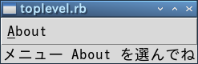 メインウィンドウ
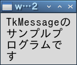 About をクリックしてサブウィンドウを表示
ところが、このままでは都合の悪いことがあるのです。このウィンドウを表示したまま、もう一度 About をクリックしてみてください。もうひとつ同じウィンドウが表示されてしまいます。それから、ウィンドウに表示されるタイトルが w00002 になっています。きちんとしたタイトルをつけた方が良いでしょう。
●ウィジェットの状態を調べる
ウィンドウの状態を調べる場合、Tcl/Tk ではコマンド winfo を使いますが、 Ruby/Tk では winfo のサブコマンドに相当するメソッドがモジュール TkWinfo に多数用意されています。ウィンドウの状態を調べるメソッドの一部を表に示します。
表：ウィジェットの状態を調べるメソッド
| geometry(w) | ウィジェットの位置を文字列 (幅x高さ+x+y) で返す |
| width(w) | ウィジェットの幅を返す |
| height(w) | ウィジェットの高さを返す |
| x(w) | 親ウィンドウ内での x 座標を返す |
| y(w) | 親ウィンドウ内での y 座標を返す |
| rootx(w) | ディスプレイ上での x 座標を返す |
| rooty(w) | ディスプレイ上での y 座標を返す |
| exist?(w) | ウィジェットが存在するか |
geometry() でウィジェットを指定した場合、返される座標はディスプレイを基準にした座標ではなく、そのウィジェットが配置されたウィンドウを基準にした座標となります。また、x(), y() でメインウィンドウを指定すると、ディスプレイ上での座標を返します。このほかにも多数のメソッドがあるので詳細は Ruby/Tk のマニュアルをお読みください。
このプログラムで必要になる、ウィンドウの存在を調べるメソッドは exist?() です。たとえば、sub_win を調べるには、TkWinfo.exist?(sub_win) とすればいいわけです。sub_win が開いていれば真を、そうでなければ偽を返します。
●ウィンドウの状態を設定する
Tcl/Tk の場合、ウィンドウの設定はコマンド wm (Window Manager) で行いますが、 Ruby/Tk では wm のサブコマンドに相当するメソッドがモジュール Tk::Wm に多数用意されています。ウィンドウの状態を設定するメソッドの一部を表に示します。
表：ウィンドウの設定を行うメソッド (一部)
| window.withdraw() | ウィンドウを画面から取り除く |
| window.deiconify() | ウィンドウを見える状態に戻す |
| window.iconify() | ウィンドウをアイコン化する |
| window.geometry(string) | ウィンドウを表示する位置を文字列で (幅x高さ+x+y) で指定する |
| window.maxsize(幅, 高さ) | ウィンドウの最大値を指定 |
| window.minsize(幅, 高さ) | ウィンドウの最小値を指定 |
| window.title(タイトル名) | ウィンドウのタイトルを指定 |
このほかにも多数のメソッドがあるので詳細は Ruby/Tk のマニュアルをお読みください。
タイトルを設定するにはメソッド title() を使います。ウィンドウ sub_win にタイトルをつけるには、sub_win.title('タイトル') とすればいいわけです。なお、ウィンドウの状態はオプションとして保持されていることが多いので、タイトルであれば sub_win['title'] = 'タイトル' でも設定することができます。
●プログラムの改良
それではプログラムを改良してみましょう。
リスト：ウィンドウの生成（改良版）
# coding: utf-8
require 'tk'
# フォントの設定
TkOptionDB.add('*font', 'Takaoゴシック 14')
# サブウィンドウ
$sub_win = nil
# メニューの設定
m = TkMenu.new
Tk.root.configure(menu: m)
m.add_command(label: 'About', under: 0, command: proc {message_window})
# ラベルの設定
TkLabel.new(text: 'メニュー About を選んでね').pack
# メッセージの表示
def message_window()
if !$sub_win || !TkWinfo.exist?($sub_win)
$sub_win = TkToplevel.new
$sub_win.title('About')
TkMessage.new($sub_win, aspect: 200,
text: 'Tkmessageのサンプルプログラムです').pack
end
end
Tk.mainloop
$sub_win はグローバル変数として定義し、nil で初期化しておきます。$sub_win が nil でなければ、メソッド TkWinfo.exists() でウィンドウ $sub_win が開いているかチェックします。まだ開いていないのであれば、TkToplevel.new() でウィンドウを生成します。次に、title() でタイトルを設定します。あとはいままでと同じです。実際にプログラムを実行すると、ウィンドウが開いた状態でメニュー about をクリックしても、新しいウィンドウは開きません。
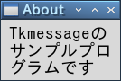 サブウィンドウ（改良版）
ウィジェットの状態
●state オプション
Tk にはいろいろなウィジェットが用意されていますが、場合によっては、ウィジェットの機能を無効にしたいことがあります。たとえば、ボタンやメニューに割り当てた機能が動作しない場合、ボタンやメニューの選択を無効にしなければいけませんが、そのことをユーザーに知らせた方が使いやすいアプリケーションになります。この場合、ウィジェットの状態を制御する state オプションを使うと便利です。state の値を表に示します。
表：state の値
| normal | 通常の状態 |
| active | アクティブな状態 |
| disabled | 無効な状態 |
ボタンなどのウィジェットでは、その上にマウスカーソルがくるとアクティブな状態になります。Tk では、ウィジェットがアクティブな状態になったときに、そのウィジェットを強調表示することができます。そのことで、マウスボタンを押したときに何か処理が行われることを表すことができます。
state に disabled を設定すると、そのウィジェットは無効な状態になります。ボタンウィジェットであれば、ラベルの色が変わりマウスでボタンをクリックしても押すことができなくなります。テキストの色はオプションで指定することができます。
表：テキストの色を指定するオプション
| activeforeground | アクティブ時の色を指定 |
| activebackground | アクティブ時の背景色を指定 |
| disabledforeground | 無効時の色を指定 |
無効時の背景色は通常の背景色と同じになります。
●ボタンの状態を変更する
それでは簡単な例を示しましょう。ラジオボタンを使ってボタンの状態を設定します。
リスト：ボタンの状態を変更する
# coding: utf-8
require 'tk'
# フォントの設定
TkOptionDB.add('*font', 'Takaoゴシック 14')
# 変数
var = TkVariable.new('normal')
# ボタン
b = TkButton.new(text: 'button',
activeforeground: 'green', disabledforeground: 'red')
b.pack(fill: 'x')
# ラジオボタンの設定
for x in ['normal', 'active', 'disabled']
TkRadiobutton.new(text: x, value: x, variable: var,
command: proc {b.configure(state: var.value)}).pack(anchor: 'w')
end
Tk.mainloop
ラジオボタンで選択した値は変数 var に格納し、コールバック関数でボタンの状態を変更します。変数 var は、あらかじめ normal に初期化しておきます。コールバック関数では、configure() を使って state に変数 var の値をセットするだけです。これでボタンの状態を変更することができます。
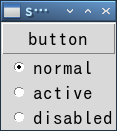
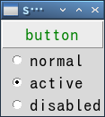
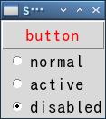
ボタンの状態を変更
●メニューの状態を変更する
次はメニューの状態を変更してみましょう。一般に、メニューには複数の項目を登録しますが、それらの項目に対していろいろなオプションを設定することができます。項目を操作するために複数のメソッドが用意されていますが、オプションを設定するメソッドが entryconfigure() です。
entryconfigure(項目, option, value)
メニュー項目に対する configure コマンドと考えてください。項目の指定には次の方法があります。
表：entryconfigure の項目
| N | 数値で指定 (先頭の項目が 0 番目となる) |
| @N | 画面上端から N ピクセルだけ下にある項目 |
| end, last | 最後の項目 |
| active | アクティブな状態にある項目 |
| none | どれでもない項目
(全ての項目を非アクティブにするために使用する) |
| パターン | パターンと一致するラベル名を持つ項目 |
簡単な例として、次のようなメニューを考えてみましょう。
リスト：メニューの状態を変更する
# coding: utf-8
require 'tk'
TkOptionDB.add('*font', 'Takaoゴシック 14')
var = TkVariable.new('normal')
def dummy()
print "dummy\n"
end
# メニューの設定
m0 = TkMenu.new
Tk.root.configure(menu: m0)
m1 = TkMenu.new(m0, tearoff: false)
m0.add_cascade(label: 'Menu', under: 0, menu: m1)
m1.add_command(label: 'Menu1', command: proc {dummy})
m1.add_command(label: 'Menu2', command: proc {dummy})
m1.add_command(label: 'Menu3', command: proc {dummy})
# ラジオボタンの設定
for x in ['normal', 'active', 'disabled']
TkRadiobutton.new(text: x, value: x, variable: var,
command: proc {m1.entryconfigure('Menu1', state: var.value)}).pack(anchor: 'w')
end
Tk.mainloop
Menu1 の状態をラジオボタンで設定します。ラジオボタンが選択されたら、コールバック関数でメニューの状態を変更します。項目の指定にはパターンを使いました。数値を使うよりもこの方がわかりやすいでしょう。メニューも色を指定することができますが、無効時の色を指定する disabledforeground は用意されていません。メニューの状態を disabled に設定すると、Menu1 が灰色に表示され選択することができなくなります。
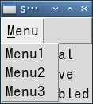 通常のメニュー
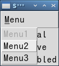 disabled に設定 (Menu1 が灰色)
ウィンドウのリサイズ
今回はウィンドウの大きさを変更してみましょう。もちろん、Tk はデフォルトでウィンドウのリサイズに対応しています。いままでのサンプルプログラムでも、マウスでウィンドウの大きさを変更することができます。ただし、ウィジェットの大きさは変化しません。ウィンドウを小さくしたらウィジェットが表示されなくなった、ということも起こります。まあ、これはウィンドウの大きさを制限することで回避することができます。ですが、アプリケーションによっては、ウィンドウのリサイズに合わせてウィジェットの大きさを変更した方がよい場合もあるでしょう。
●Packer のリサイズ
ところで、ウィジェットのリサイズは面倒だな、と思われた方はいませんか。まじめに考えると、ウィンドウのサイズからウィジェットのサイズを計算して、大きさを変更する処理が必要になるのですが、Tk ではそんな難しいことをする必要はありません。ジオメトリマネージャーに用意されているオプションを設定するだけで、ウィンドウのサイズに合わせてウィジェットの大きさを変更することができます。Packer を使う場合は、次のオプションを設定します。
- expand: boolean
ウィンドウに余白が生じたとき、boolean が真であれば余白をウィジェットに割り当てる。
余白をウィジェットに割り当てただけでは、ウィジェットは大きくなりません。ウィジェットを引き伸ばすための fill オプションを設定してください。それでは簡単な例を示しましょう。次のプログラムを見てください。
リスト：Packer のリサイズ
require 'tk'
TkButton.new(text: 'button 0').pack(expand: true, fill: 'both')
TkButton.new(text: 'button 1').pack(expand: true, fill: 'both')
Tk.mainloop
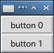 Packer によるボタンの配置
 ウィンドウを拡大する
ウィンドウを拡大する
ウィンドウ全体に 2 つのボタンが表示されます。マウスでウィンドウの大きさを変えてみてください。ウィンドウに合わせてボタンの大きさも変化します。このように、Tk ではオプションを設定するだけで、ウィンドウのリサイズにも簡単に対応することができるのです。
ウィジェットを配置する順番も大切です。Packer はウィンドウが小さくなるとウィジェットを圧縮しますが、本当にスペースが無くなるとウィジェットは表示されなくなります。このとき、配置された逆順でウィジェットが削除されます。つまり、最初に配置されたウィジェットが最後まで残るのです。大切なウィジェットは最初に配置した方がいいでしょう。
●Gridder のリサイズ
Gridder のリサイズは、マスの状態を設定するメソッド grid_columnconfigure() と grid_rowconfigure() で行います。
window.grid_columnconfigure(column_index, options, ...)
window.grid_rowconfigure(row_index, options, ...)
表：オプションの種類
| minsize | 最小の幅/高さを数値で指定する |
| weight | 余白を配分するときの割合を数値で指定する |
| pad | 詰め物を数値で指定する |
リサイズに対応するには、オプション weight に 1 以上の整数値を指定します。簡単な使用例を示しましょう。ボタンを 4 つ Gridder で配置します。
リスト：Gridder のリサイズ
require 'tk'
column_data = [0, 0, 1, 1]
row_data = [0, 1, 0, 1]
for x in 0..3
b = TkButton.new(text: "button #{x}")
b.grid(column: column_data[x], row: row_data[x], sticky: 'nsew')
end
Tk.root.grid_columnconfigure(0, weight: 1)
Tk.root.grid_columnconfigure(1, weight: 2)
Tk.mainloop()
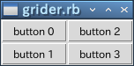 Gridder によるボタンの配置
grid_columnconfigure() は縦方向に配置されたマスのオプションを設定します。次のように、0 列に weight = 1 を設定します。
Tk.root.grid_columnconfigure(0, weight: 1)
ボタンはメインウィンドウに配置されているので、grid_columnconfigure() はメインウィンドウのオブジェクト root のメソッドとして呼び出します。これで、ウィンドウが横に大きくなると、0 列に配置されたボタン button 0 と button 1 も横に大きくなります。
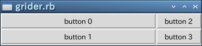 button 0, 1 は横方向に伸びる
1 列目は weight オプションを設定していないので、余白は割り当てられません。それでは、次のプログラムを追加してみましょう。
Tk.root.grid_columnconfigure(1, weight: 2)
 4 つのボタンが横方向に伸びる
4 つのボタンが横方向に伸びる
今度は、1 列目にも余白が割り当てられますが、-weight オプションの設定が 2 なので 0 列の 2 倍の余白が割り当てられます。つまり、ボタン button 2 と button 3 の方が大きく伸びるわけです。
このままではウィジェットの縦方向が大きくなりません。これに対応するには grid_rowconfigure() を使います。次のプログラムを追加してください。
Tk.root.grid_rowconfigure(0, weight: 1)
Tk.root.grid_rowconfigure(1, weight: 2)
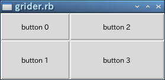 4 つのボタンが縦横方向に伸びる
縦に増えた余白は、0 行と 1 行に 1 対 2 の割合で配分されます。したがって、ウィンドウを大きくするとボタン button 3 がいちばん大きくなります。縦と横の関係で混乱しそうですが、実際にプログラムを動かしてみてください。納得してもらえると思います。
●キャンバスウィジェットのリサイズ
次に、キャンバスウィジェットのリサイズを行ってみましょう。キャンバスもウィジェットなので、pack() や grid() のオプションを指定することで、ウィンドウのリサイズに対応することができます。次のプログラムを実行してください。
リスト：キャンバスウィジェットのリサイズ (1)
require 'tk'
c0 = TkCanvas.new(bg: 'darkgreen', width: 200, height: 200)
TkcRectangle.new(c0, 20, 20, 180, 180) {
fill 'red'
}
c0.pack(fill: 'both', expand: true)
Tk.mainloop
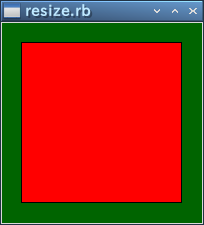 キャンバスウィジェットを配置
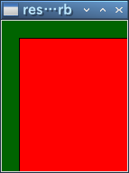 ウィンドウを縮小
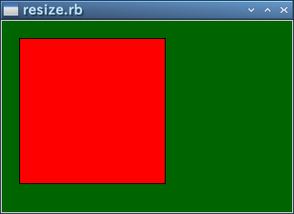 ウィンドウを拡大
キャンバスウィジェットの背景は darkgreen で、その上には赤い四角形が描かれています。ご覧のように、マウスでウィンドウの大きさを変えると、キャンバスウィジェットの大きさは変わりますが、図形の大きさは変わりません。
図形は pack() で配置されているわけではないので、Packer はキャンバスウィジェットを引き伸ばすことはできても、その中の図形を操作することはできないのです。図形はユーザーが定義したものですから、Packer が関知しないのは当然のことですね。したがって、ウィンドウのリサイズに対応するには、ユーザー側で図形を再描画する処理をプログラムする必要があるのです。
●図形の再描画
図形を再描画するには、ウィンドウがリサイズされたときに発生するイベント Configure を使います。このイベントをバインドして、ウィンドウの大きさが変わったら図形を再描画します。バインドはメインウィンドウに対して設定します。
Tk.root.bind('Configure', callback, ...)
キャンバスウィジェットは fill と expand を設定して pack されているので、ウィンドウの大きさが変わると、キャンバスの大きさも変わります。このときに図形の大きさを変える関数を callback に登録して実行すればいいわけです。
キャンバスウィジェットの大きさですが、これはメソッド cget() では求めることができません。実際、ウィンドウがリサイズされキャンバスウィジェットが引き伸ばされても、最初に設定されたオプションの値そのままになっています。キャンバスウィジェットの大きさを求めるには、ウィジェットの情報を取得するメソッド TkWinfo.width() と TkWinfo.height() を使います。
また、ウィンドウが小さくなると図形が見えなくなるので、ウィンドウの大きさを制限します。これはメソッド minsize() と maxsize() で設定することができます。幅と高さはピクセル単位で指定します。
プログラムは次のようになります。
リスト：キャンバスウィジェットのリサイズ (2)
# coding: utf-8
require 'tk'
Tk.root.minsize(100, 100)
Tk.root.maxsize(400, 400)
# キャンバスの設定
$c0 = TkCanvas.new(bg: 'darkgreen', width: 200, height: 200)
$rt = TkcRectangle.new($c0, 20, 20, 180, 180) {
fill 'red'
}
$c0.pack(fill: 'both', expand: true)
# 図形の大きさを変更
def change_size
w = TkWinfo.width($c0)
h = TkWinfo.height($c0)
$c0.coords($rt, 20, 20, w - 20, h - 20)
end
# バインディングの設定
Tk.root.bind('Configure', proc { change_size })
Tk.mainloop()
関数 change_size() の処理は簡単です。メソッド width() と height() でキャンバスの大きさを求めたら、メソッド coords() で図形の位置を変更するだけです。とても簡単ですね。たったこれだけの処理で、ウィンドウの大きさに合わせて図形の大きさを変更することができます。
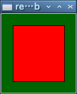 ウィンドウを縮小
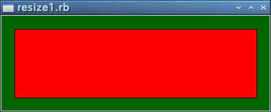 ウィンドウを拡大